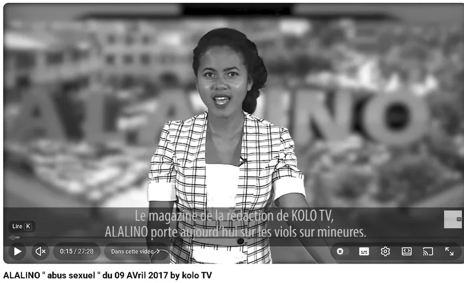
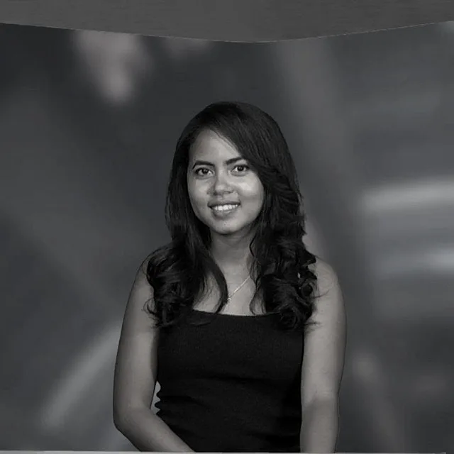
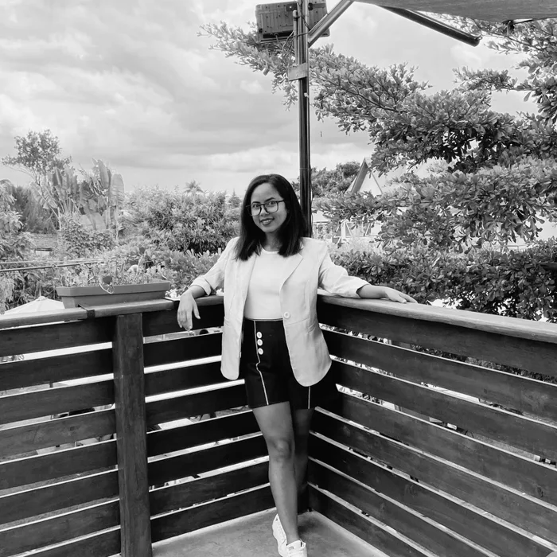
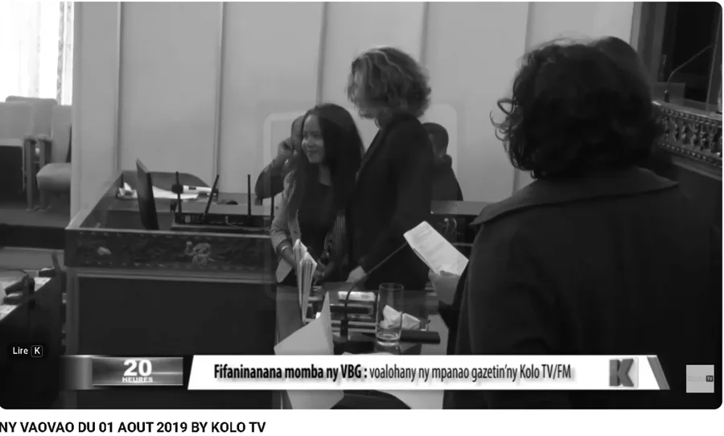
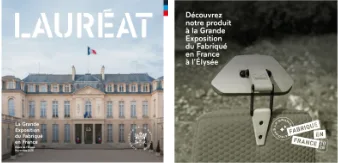
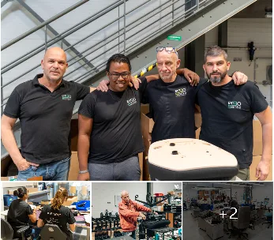
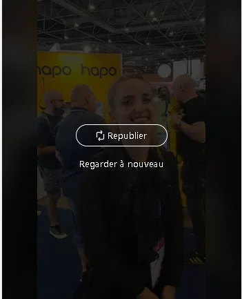

KOLO TV / FMALALINOAbus sexuelInformer. Et ouvrir le dialogue.
Le documentaire ALALINO « Abus sexuel », consacré aux violences sur mineures. Participation au concours UNICEF sur les droits de l’enfant en 2017.
Regarder la vidéoJOURNALISME · CONTENU · COMMUNICATION
Des histoires qui font le lien.
Journaliste, Community Manager,
Responsable communication.
Antsirabe, Madagascar

01 / FAISONS CONNAISSANCE
De la salle de rédaction
au monde digital…

J’ai appris à raconter, informer
et captiver.
Rédactrice en chef adjointe, présentatrice, attachée de presse, aujourd’hui rédactrice web et community manager : chaque expérience a enrichi ma façon de donner vie aux histoires.
Avana présente également mon parcours du journalisme à l’assistance communication, à travers la création de contenus, les réseaux sociaux, les newsletters et les articles de blog.
Ma combinaison : la rigueur du journalisme, l’aisance devant la caméra et la créativité des réseaux sociaux.
Mon rôle ? Faire connaître votre marque, faire vivre votre communauté et générer des leads grâce à des contenus qui donnent envie de s’engager.
Découvrir mon univers02 / LES MOTS EN ACTION
Journalisme, contenus de marque et réseaux sociaux.
Quelques sujets croisés au fil de mon parcours.

KOLO TV / FMALALINOAbus sexuelLe documentaire ALALINO « Abus sexuel », consacré aux violences sur mineures. Participation au concours UNICEF sur les droits de l’enfant en 2017.
Regarder la vidéo
KOLO TV / FMPrix VBGMihanta1er prix du concours sur les violences basées sur le genre, catégorie télévision, en 2019. Retrouvez la vidéo consacrée à cette distinction.
Regarder la vidéo du prix VBGDécouvrez la présentation de mon parcours par Avana et les retours clients dans les commentaires de la publication LinkedIn.

COMMUNICATION DE MARQUELe savoir-faireUne publication repartagée en octobre 2026 autour de la sélection de la Manufacture des Cévennes à la Grande Exposition du Fabriqué en France.

ERGO SANTÉLe travailInclusion et maintien dans l’emploi : un exemple de publication Ergo Santé repartagée à l’occasion de la journée mondiale du handicap.

HAPO / PRÉVENTICA LYONSur lePrésentation des exosquelettes et dispositifs d’assistance physique Hapo au salon Préventica Lyon, du 6 au 8 octobre 2026.
Fiches produits, articles de blog et contenus web : rendre l’information claire, utile et adaptée à son public.
Des contenus qui donnent
envie d’aller plus loin.
Création de newsletters avec Mailjet et Mailchimp. La rédaction, le visuel et le message au service d’une communication régulière.
Exemples de newsletters : [À COMPLÉTER]
Les exemples de réseaux sociaux proviennent des repartages fournis. Ils illustrent les sujets abordés ; leur rédaction initiale reste à confirmer.
03 / LE FIL DE MON HISTOIRE
Plusieurs casquettes.
Un même goût pour les histoires.
De l’enquête à la création de contenus, une même attention : comprendre le sujet et trouver le bon angle.
Ergomada
Animation de Facebook, LinkedIn, Instagram, Threads et YouTube. Création, planification et publication de posts, carrousels et vidéos ; analyse des performances et veille.
Newsletters, fiches produits, articles de blog, contenus web, visuels Canva et adaptation de templates InDesign, montage photo et vidéo avec CapCut.
Entreprise québécoise
Télétravail à temps partiel.
KOLO TV/FM · Antananarivo
Encadrement de la rédaction, contrôle qualité, choix des sujets et des angles, comités de rédaction. Reportages, enquêtes, journal télévisé, journal parlé et documentaire ALALINO.
Ministère de l’Aménagement du Territoire et des Travaux Publics
Communiqués et dossiers de presse, relations médias et conférences de presse.
KOLO TV/FM
Émissions Ankitsimpo et journal de l’économie. Supervision de la mise en image et de la direction technique.
Université de Tuléar
04 / MA BOÎTE À OUTILS
Rédaction web, gestion éditoriale, choix des angles, articles de blog et fiches produits.
Présentation, production audiovisuelle, reportage, création de visuels et montage vidéo.
Community management, newsletters, relations presse et communication de marque.
Malgache Langue maternelle Français Excellente maîtrise
05 / DES SUJETS QUI COMPTENT
Un parcours reconnu par des concours nationaux, autour de sujets sensibles traités avec attention.
Concours organisé par le Centre Européen d’Appui Electoral (ECES).
Lire l’articleBanky Foiben’i Madagasikara — Banque centrale de Madagascar.
Documentaire ALALINO « Abus sexuel ».
06 / AU FIL DES COLLABORATIONS
Je viens juste de mettre en ligne tes rédactions pour octobre, c’était parfait merci !
C’est parfait pour moi, merci beaucoup pour ta réactivité !!
Elles sont parfaites je te remercie
ET SI ON ÉCRIVAIT LA SUITE ?
« Chaque instant est mémorable. »
Mon CV public